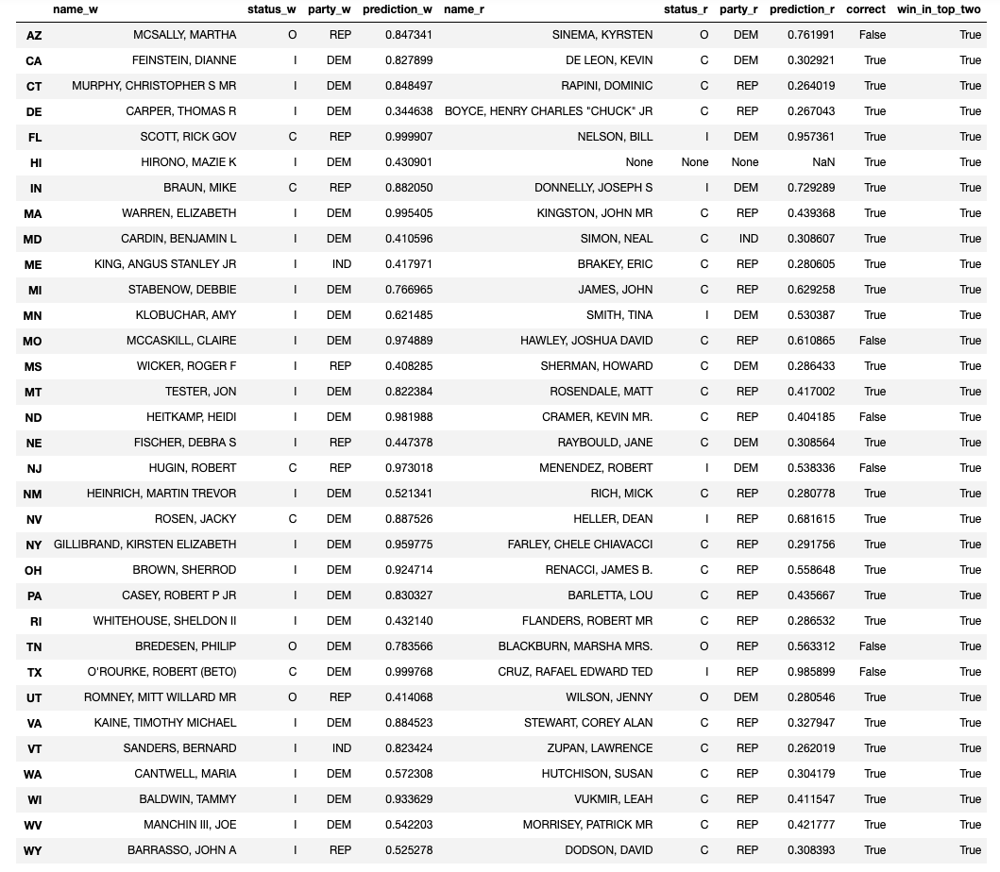

Project Trajectory
Our project initially started with predicting, outright, the midterm elections. The model we created to do this was a linear regression against district-specific data. In this vein we looked at predictors such as: past victors, past parties, voter turnout, and voter demographics. The initial model scored around 75%. We found a development here: voter demographics were multi-collinear with party affiliation in most regions. We used the Pew Research Center’s research on the subject to confirm this[1]. We decided to drop much of the demographic predictors to adjust for this.
The improved model, as we stated in the report, had an accuracy score of 79% on testing data. We identified that this model is fairly strong in predictive power. This score, in a vacuum, is actually quite compelling and useful: it is well over the average “guess” and gives reliable results on most districts.
After having achieved a reasonable model for predicting open seats in the House midterm election, we identified that there was much more to explore in this problem. This is when the idea of “battleground” districts became a center talking point in our group. Our model’s usefulness was hinged on incumbency. We found that the model was marginally better than predicting based on the party affiliation of the most recent winner. This is because demographically homogenous districts are highly likely to vote along party lines come midterm elections. This made incumbency a simple yet powerful predictor. If a candidate was running to keep their seat they would be representing the same party, and if parties were to change their candidates for that district they still had overwhelmingly likelihood of winning.
As a group we wanted to brainstorm and find what could be most useful for predicting the elusive battleground districts. For example, we consider the weight of quantity of gerrymandered borders on a county. Although gerrymandered districts are correlated with flipping, the data and method was insubstantial.
Finally, we came to the idea to study the Senate as a means of finding the best predictors for battleground districts in the House. This was justified because the House and the Senate have a similar relationship with incumbency, but state-level elections have better documentation and data collection. Longer terms and ratio between candidate and average constituency are clear markers of the importance of a Senate elections. Choosing to study this system gave us more readily-available access to candidate-based data.
Our goal became predicting the Senate elections as best as possible, to then distill which predictors would be useful for understanding battleground districts in the House. Early in our EDA for our second model (predicting the Senate), we found that party polarization and campaign funding would be meaningful factors to explore.
In studying the Senate we essentially started the entire project anew with a refined focus — crushing battlegrounds, or in this case, Senate swing states. In order to identify swing states we looked at party polarization over the past few years. This is elegantly laid out in our EDA (the graphic with many small plots). Using this as a predictor our model was able to deftly sort between states that were bound to remain under their previous party affiliations, and states in which the status quo was not highly probably.
Alongside history of party polarization we used some candidate-specific data, namely, campaign fundraising. Candidate-specific data gave credence to the Senate model over the initial House model — as it was better documented, it gave more explanatory power over decisions in battlegrounds. Although the social takeaway is a little bleak, campaign fundraising had strong predictive power in determining winners in swing states.
We continued to tweak and modify our Senate model to get it as accurate as possibly. Ironically, the amount of time we spent on it caused it to outperform our model for predicting the midterm elections. We ended getting a testing accuracy 94%.
In the conclusion section of the report we speak briefly about the value of predicting the Senate, and the upshots to gaining explanatory power over potential predictors in battleground districts. Unfortunately, we did not have the time or resources to extrapolate our detailed results onto our model for the House elections.
[1]“1. Trends in Party Affiliation among Demographic Groups.” Pew Research Center for the People and the Press, September 18, 2018. https://www.people-press.org/2018/03/20/1-trends-in-party-affiliation-among-demographic-groups/.
Results
Final Model results
Below we have the Senate predictions made by our final model. 
From the table provided, we can see that our model correctly predicted 27 out of the 33 seats in the general election. We can see that the types of elections our model typically gets wrong are the - understandably - difficult to predict outcomes such as open seat elections and when an incumbent loses to a challenger. However, our model did correctly predict 3 challengers that defeated incumbents and 1 open seat election correctly, something that is impressive for a computer model with no human political intuition behind it.
It should also be noted that our model put all 33 actual winners within the top two of the contenders of each state. This shows that our model clearly has identified some type of trend, and either an even more sophisticated model or some added human intuition could help in predicting all of these outcomes correctly.
Taking a look at the coefficients, we found that our logistic regression model weighted incumbency positively and challenger/open seat status negatively, all heavily. It also weighted fundraising numbers very slightly. We were surprised to see, however, that it did not weight previous election voter polarization at all. We think this may be caused by the small differences in the numbers, and we think future data augmentation may help with this.
As a note, we put the 2018 election results in the dataframe to show how our model did, but never did we ever use the 2018 election results in any part of our model training.
Further considerations
As shown above, our model performed quite respectably. If we were to make an even more sophisticated model in the future, we would consider a few more things. We would like to properly take into account voting trends over several previous election cycles, and we would also like to include the presidential election results per state to see how they influence future Senate elections.
Another main addition we would have liked to make is make a more concrete per-state model - meaning we would like for all candidates running within a state to “compete” with each other in the model. This would mean each candidate is not only evaluated from his/her own statistics, but also based on who they are matching up against as well. We would like the probabilities of all candidates running within a state to add up to 1 so we can have a proper percentage likelihood prediction of who is going to win the seat.